🏆 Aktiviti Terkini
International Robotic Challenge (IRC) 2026Kelab Robotik SMK Bandar Tasik Puteri telah menyertai International Robotic Challenge (IRC) 2026 bagi memberi pendedahan kepada murid dalam bidang robotik,pengaturcaraan dan inovasi. Penyertaan ini turut memupuk keyakinan,kreativiti dan semangat kerja berpasukan.
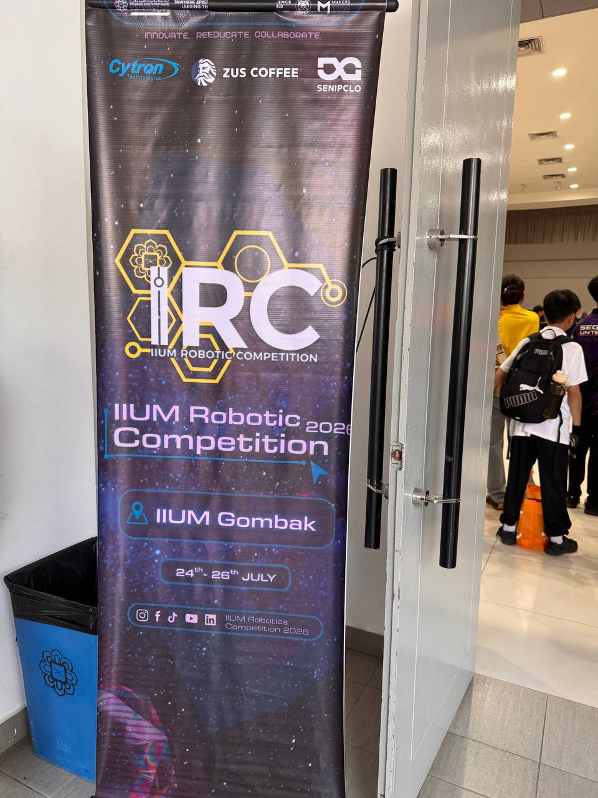
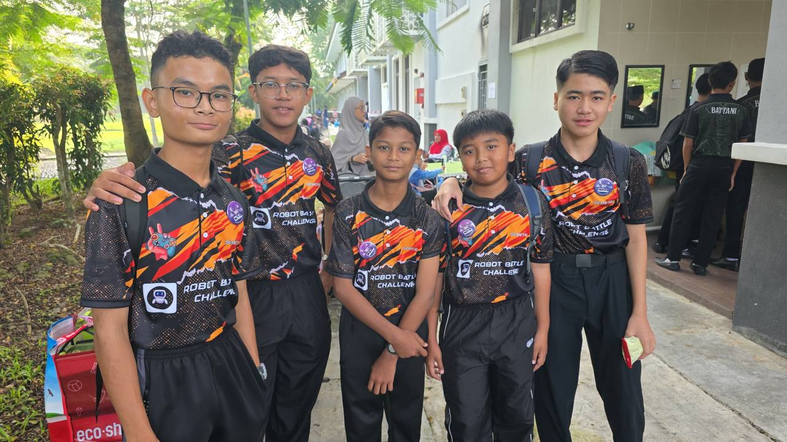
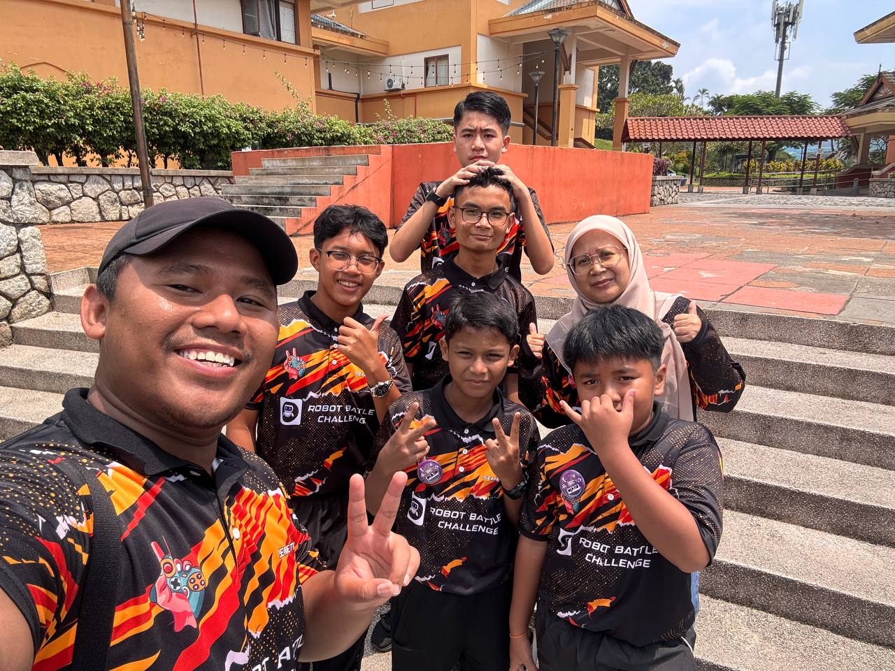
📅 Aktiviti Kelab Robotik
Perjalanan dan penglibatan Kelab Robotik SMK Bandar Tasik Puteri.
📅 2026
💻 Program Coding For All
📅 Tarikh: 13 Jun 2026
📍 Tempat: Makmal Komputer
Bengkel pengenalan Raspberry Pi Pico kepada murid RBT Tingkatan 1 hingga 3 dan dibantu oleh guru muda ahli Kelab Robotik.
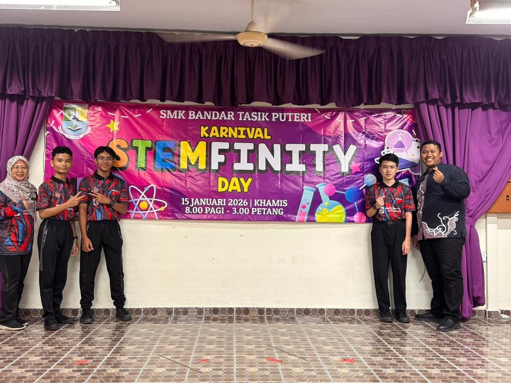
🚀 STEMFINITY DAY
📅 Tarikh: 15 Januari 2026
📍 Tempat: SMK Bandar Tasik Puteri
Program STEM yang melibatkan pelbagai aktiviti dan pameran teknologi.
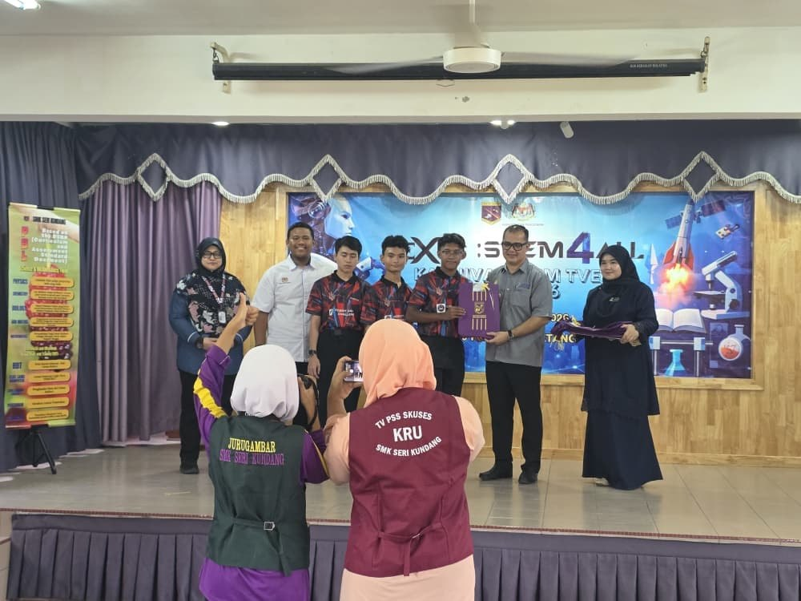
🏅 Nexus STEM For All 1.0
🏆 Pencapaian: Tempat Ke-5
📍 Program: Karnival STEM TVET BILU
Penyertaan pasukan Kelab Robotik dalam pertandingan robotik.
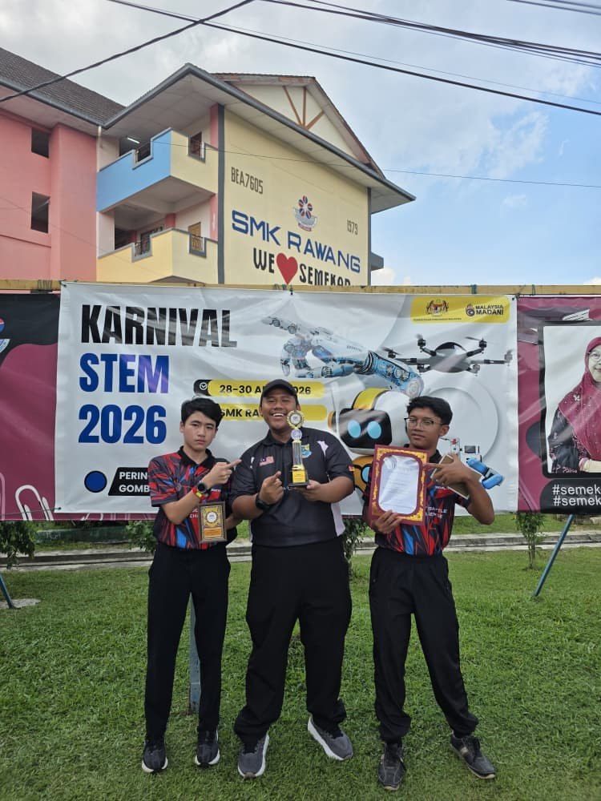
🥉 Robot Battle Challenge
🏆 Pencapaian: Tempat Ke-3
📍 Pertandingan: Karnival STEM Daerah Gombak
Pasukan Kelab Robotik berjaya meraih tempat ketiga dalam pertandingan Robot Battle Challenge.
📅 2025
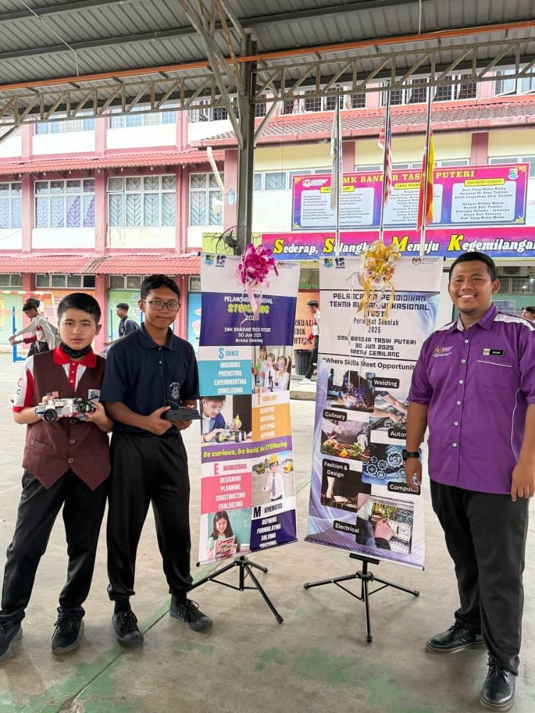
🎉 Pelancaran Karnival TVET
📅 Tarikh: 30 Jun 2025
📍 Tempat: SMK Bandar Tasik Puteri
Majlis pelancaran Karnival TVET peringkat sekolah yang melibatkan penyertaan warga sekolah.
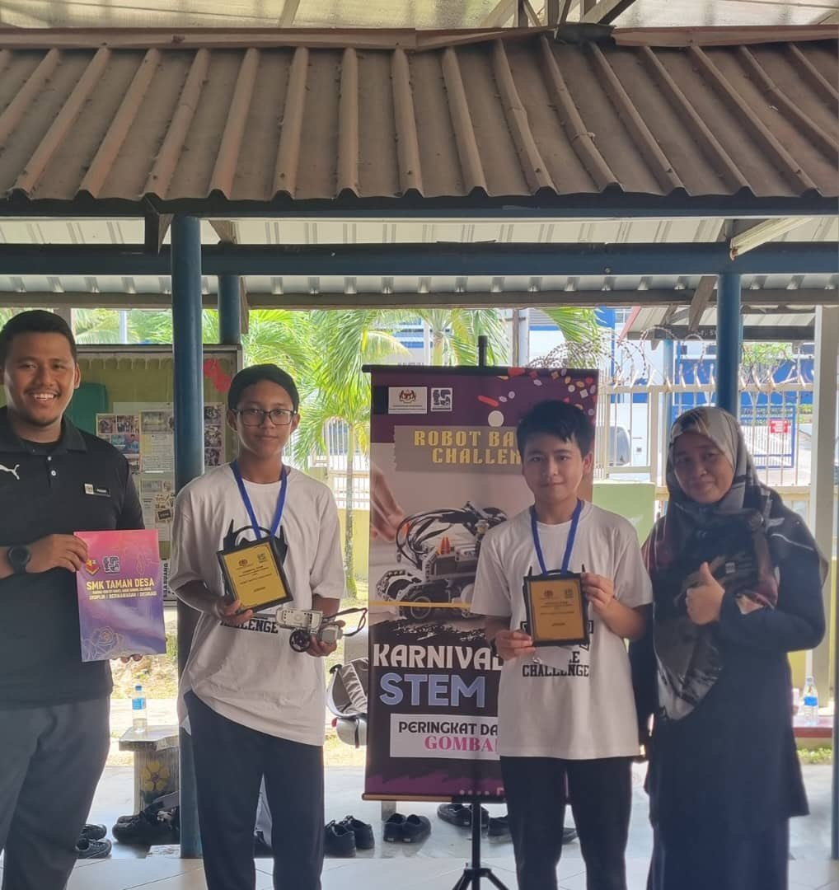
🥇 Robot Battle Challenge
🏆 Pencapaian: Johan
📍 Pertandingan: Karnival STEM Daerah Gombak
Pasukan Kelab Robotik berjaya muncul sebagai Johan dalam pertandingan Robot Battle Challenge.
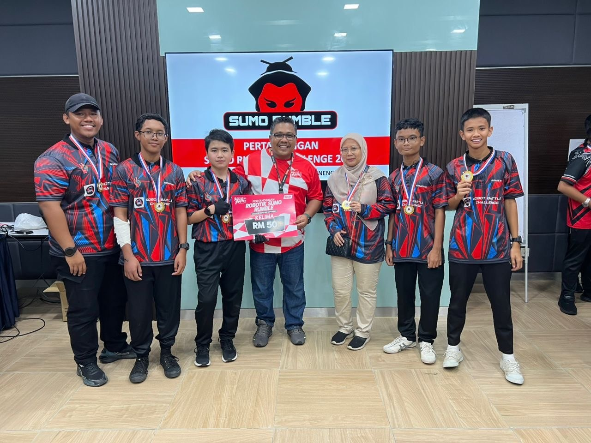
🏅 Robot Sumo Rumble Challenge
🏆 Pencapaian: Tempat Ke-5
Penyertaan Kelab Robotik dalam pertandingan Robot Sumo Rumble Challenge.
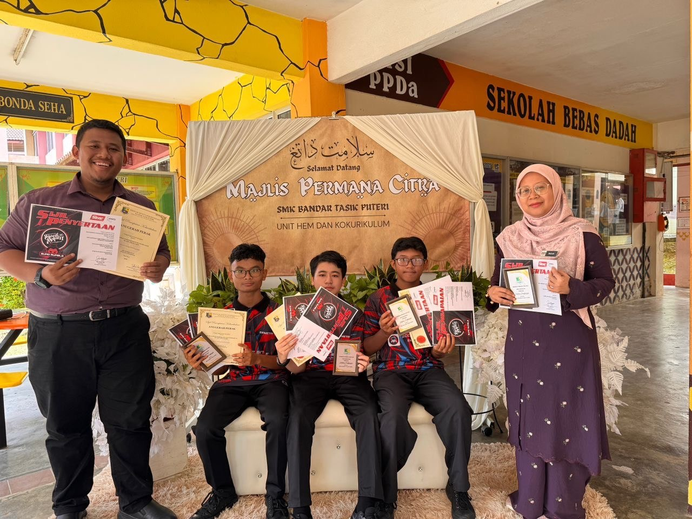
🥈 Anugerah Permana Citra
🏆 Anugerah: Perak
Kelab Robotik menerima pengiktirafan Anugerah Perak dalam Majlis Anugerah Permana Citra.
📅 2024
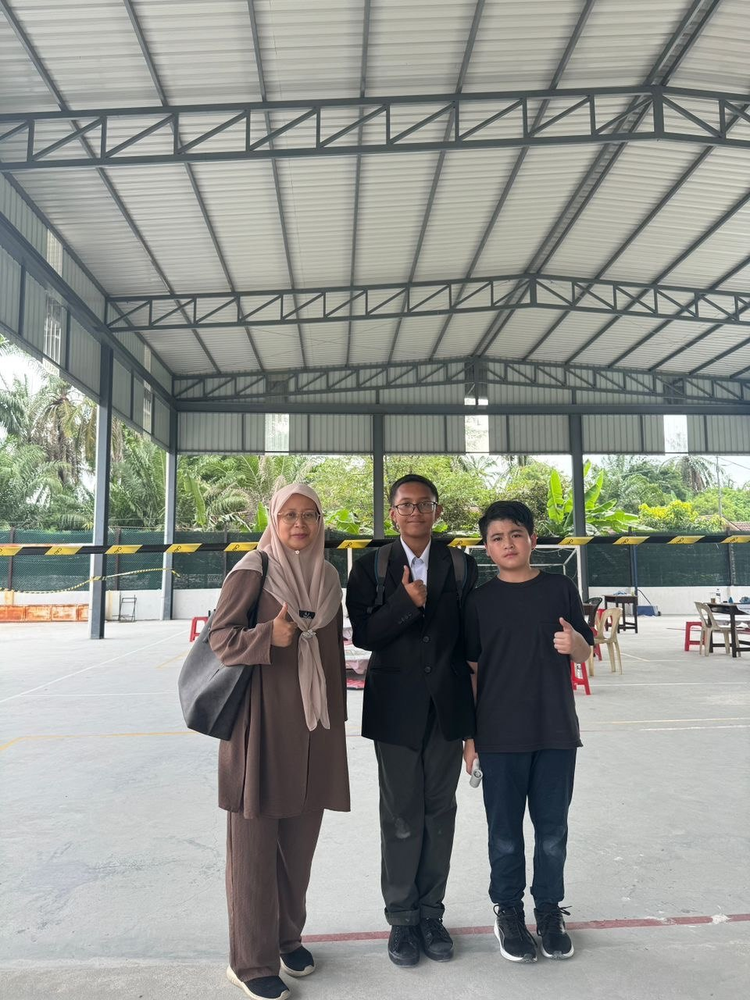
🤖 Karnival STEM Peringkat Negeri Selangor
🏆 Pencapaian: Tempat Ke-8
Penyertaan Kelab Robotik di Karnival STEM Peringkat Negeri Selangor.
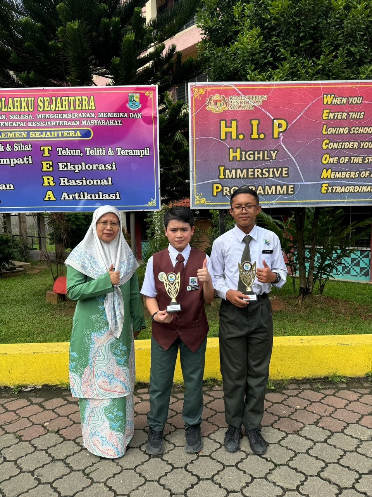
🥈 Anugerah Permana Citra
🏆 Anugerah: Perak
Kelab Robotik menerima pengiktirafan Anugerah Perak dalam Majlis Anugerah Permana Citra.
🏆 Hall of Fame
Galeri Kejayaan Kelab Robotik SMK Bandar Tasik Puteri
🇲🇾 Pencapaian Peringkat Kebangsaan
Sumo Rumble Challenge 2025
Pertandingan: Sumo Rumble Challenge (Peringkat Kebangsaan)
Tahun: 2025
Kelab Robotik berjaya muncul sebagai Tempat Ke-5 dalam pertandingan Sumo Rumble Challenge Peringkat Kebangsaan.
🇲🇾 Pencapaian Peringkat Negeri
Robot Battle Challenge 2024
Pertandingan: Robot Battle Challenge (Peringkat Negeri)
Tahun: 2024
Kelab Robotik berjaya muncul sebagai Tempat Ke-8 dalam pertandingan Robot Battle Challenge Peringkat Negeri Selangor.
🇲🇾 Pencapaian Peringkat Daerah
Robot Battle Challenge 2025
Pertandingan: Karnival STEM Daerah Gombak
Tahun: 2025
Kelab Robotik berjaya muncul sebagai Tempat Pertama dalam pertandingan Robot Battle Challenge Peringkat Daerah Gombak sempena Karnival STEM.
Robot Battle Challenge 2026
Pertandingan: Karnival STEM Daerah Gombak
Tahun: 2026
Pasukan Kelab Robotik berjaya meraih Tempat Ke-3 dalam pertandingan Robot Battle Challenge.
Robot Battle Challenge 2026
Pertandingan: Karnival TVET BILU Daerah Gombak
Tahun: 2026
Pasukan Kelab Robotik berjaya meraih Tempat Ke-5 dalam pertandingan Robot Battle Challenge.
🇲🇾 Pencapaian Peringkat Sekolah
Majlis Permana Citra 2025
Majlis: Permana Citra (Peringkat Sekolah)
Tahun: 2025
Kelab Robotik berjaya menerima Anugerah Perak Majlis Permana Citra Peringkat Sekolah.
Majlis Permana Citra 2024
Majlis: Permana Citra (Peringkat Sekolah)
Tahun: 2024
Kelab Robotik berjaya menerima Anugerah Perak Majlis Permana Citra Peringkat Sekolah.
🖼️ Galeri
Sorotan aktiviti dan pencapaian Kelab Robotik SMK Bandar Tasik Puteri.